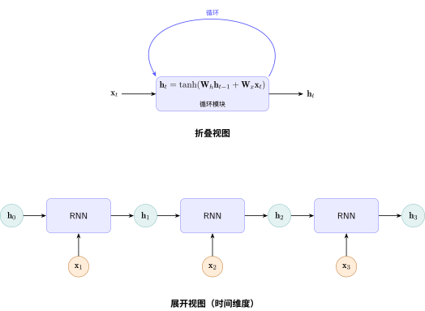
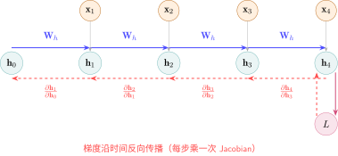

循环神经网络：让网络拥有"记忆"#
全连接神经网络 中的全连接网络和 卷积神经网络 中的 CNN 有一个共同特征：给定一个输入，产生一个输出，然后"忘记"这个输入。每次前向传播是独立的，网络不记得上一秒看到了什么。
这显然不符合我们处理序列的方式。读这句话时，你的大脑记住了前文——"这"指代什么，"显然"修饰什么——这些理解都依赖于记忆。
关键问题：如何让神经网络在处理序列时拥有记忆？
历史背景#
1986年，David Rumelhart 和 Geoffrey Hinton 等人发表了反向传播论文 [RHW86]，为训练多层网络奠定了基础。几乎同时，Michael Jordan 提出了带有循环连接的网络架构 [Jor86]——让网络将上一时刻的输出作为当前输入的一部分，从而拥有对过去的"记忆"。
1990年，Jeffrey Elman 在此基础上提出了简单循环网络（Simple Recurrent Network） [Elm90]，其核心结构——一个隐状态 \(\mathbf{h}_t\) 在每一步基于 \(\mathbf{h}_{t-1}\) 和 \(\mathbf{x}_t\) 更新——成为此后三十年所有循环架构的基石。
备注
为什么叫"循环"？ 因为网络在时间上的每一步使用相同的权重 \(\mathbf{W}_h\) 和 \(\mathbf{W}_x\)。这类似于 卷积神经网络 中卷积核的权值共享——同一个规则应用到所有位置，只是 CNN 共享空间位置，RNN 共享时间位置。
从大脑到RNN：记忆的直觉#
你如何理解一句话？#
想象你逐字阅读：“今天天气很好所以我决定去公园散步”。
读到"今天天气很好"时，你建立了一个上下文
读到"所以"时，你知道接下来是结论
读到"我决定去"时，你预期一个动作
读到"公园散步"时，你把它和"天气好"建立了因果联系
每一步，你的大脑都在更新一个内部状态——一个不断演化的、包含前文信息的"摘要"。这个摘要不是完整记忆（你不会逐字背诵前文），而是对理解当前词最关键的压缩表示。
生物学的启发：大脑不"反复读取"历史#
RNN 的灵感直接来自大脑中一个更根本的事实——大脑不是每个瞬间把所有历史"重新读一遍"。
想想你是怎么理解一段音乐的。听到第三个音符时，你并没有重新播放前两个音符。你对前两个音符的感知已经"融入"了当前的神经活动——大脑利用一系列持续变化的物理状态来自然携带历史信息：
神经元膜电位：一个神经元被激活后，它的膜电位不会瞬间归零，而是逐渐衰减。这个衰减过程本身就在"记住"最近发生过什么。
突触短期可塑性：高频使用一个突触后，它的传递效率会在短时间内改变（增强或抑制）——这是突触层面上的"工作记忆"。
钙离子浓度：当神经元放电时，钙离子流入细胞内，浓度缓慢下降。这个化学梯度编码了过去几百毫秒内的活动强度。
神经递质残留：突触间隙中的神经递质分子不会瞬间清除，它们的残余浓度携带着"刚才这里发生了信号传递"的信息。
这些都不是"显式的记忆存储"——大脑没有一个单独的"历史缓冲区"。历史信息是物理地、连续地嵌入在神经元和突触的状态变化中的。每一个瞬间的大脑状态都已经是所有过去输入的压缩结果。
备注
RNN 的本质：\(\mathbf{h}_t = \tanh(\mathbf{W}_h \mathbf{h}_{t-1} + \mathbf{W}_x \mathbf{x}_t)\) 就是对这个过程的数学抽象。\(\mathbf{h}_t\) 对应神经元群的膜电位模式——它随时间连续演化，每一步吸收新的输入（\(\mathbf{W}_x \mathbf{x}_t\)），同时自然地携带上一步的状态（\(\mathbf{W}_h \mathbf{h}_{t-1}\)）。信息通过时间上连续的状态变化向前传递，而不是反复从静态记忆中读取。
这就是"循环"二字的生物学含义：不是重新读取，而是持续继承。
RNN的循环结构#
RNN做的正是这件事 [Elm90]。它维护一个隐状态（hidden state） \(\mathbf{h}_t\)，在处理每一步输入 \(\mathbf{x}_t\) 时：

RNN循环结构：同一模块在时间上展开
两行公式定义了RNN的全部行为：
其中：
\(\mathbf{h}_t \in \mathbb{R}^d\)：时刻 \(t\) 的隐状态（网络的"记忆"）
\(\mathbf{x}_t \in \mathbb{R}^m\)：时刻 \(t\) 的输入
\(\mathbf{W}_h \in \mathbb{R}^{d \times d}\)：循环权重——控制"如何混合旧记忆和新输入"
\(\mathbf{W}_x \in \mathbb{R}^{d \times m}\)：输入投影——将输入映射到隐空间
\(\mathbf{W}_y \in \mathbb{R}^{k \times d}\)：输出投影——从隐状态产生预测
备注
直觉：\(\mathbf{W}_h \mathbf{h}_{t-1}\) 是"提炼旧记忆"，\(\mathbf{W}_x \mathbf{x}_t\) 是"吸收新信息"，\(\tanh\) 将两者混合并压缩到 \((-1, 1)\)，防止数值发散。
注意这里用的是 \(\tanh\) 而不是 ReLU。这是因为循环连接会让信号反复通过激活函数——ReLU 的正区间可能让激活值在循环中不断放大直至爆炸，而 \(\tanh\) 天然有界，提供了一种"自我保护"机制（激活函数 中讨论过各激活函数的特性）。
RNN的训练：穿过时间的反向传播（BPTT）#
把RNN在时间上展开：时刻1的处理产生 \(\mathbf{h}_1\)，传给时刻2的使用；时刻2产生 \(\mathbf{h}_2\)，传给时刻3……这恰好形成了一个计算图——每个时间步是一个节点，\(\mathbf{h}_{t-1} \to \mathbf{h}_t\) 是连接节点的边。
反向传播在这个展开的图上运行，称为 BPTT（Backpropagation Through Time） [Wer90]：

BPTT：梯度沿时间反向流动
损失 \(L\) 对 \(\mathbf{h}_1\) 的梯度需要穿越所有中间隐状态：
这正是 多层网络的 Jacobian 连乘与梯度消失 中讨论的 Jacobian 连乘的序列版本——每个 \(\frac{\partial \mathbf{h}_{t}}{\partial \mathbf{h}_{t-1}}\) 是一个 Jacobian 矩阵，经过 \(T\) 步连乘后，梯度呈指数级衰减（或爆炸）。
重要
RNN训练的根本矛盾：要学习长程依赖，梯度必须穿越很长的路径。但路径越长，连乘的 Jacobian 越多，梯度消失越严重——网络"记不住"太远的信息。
RNN的两个核心问题#
问题一：长程依赖困难#
从信息流动的直觉来理解：
\(\mathbf{h}_1\) 的信息要传递到 \(\mathbf{h}_{100}\)，需要经过 99 次 \(\tanh(\mathbf{W}_h \cdot)\) 变换
每一次变换都是一次"有损压缩"——就像反复复印一份文件，复印100次后，原文已面目全非
原始信号的哪些部分被保留、哪些被丢弃，网络无法直接控制
生活类比
RNN的传话游戏：100个人排成一列传一句话，第一个人说"今天天气很好"，但每个人传话时只能听到上一个人说的。到第100个人时，可能已经变成"今天有飞机"。
注意力机制的传话游戏：第100个人能同时听到前面99个人说的话，然后自己判断谁说的最关键。
问题二：梯度消失#
梯度消失（Vanishing Gradient） 中讨论过，假设每层 Jacobian 的"放大倍数"为 \(\gamma\)，经过 \(n\) 层连乘后为 \(\gamma^n\)。
RNN 中，这个 \(n\) 不是网络深度，而是序列长度。考虑 \(\tanh\) 的导数：
在大部分输入区域，\(\tanh\) 的梯度远小于 1（饱和时接近 0）。假设平均 \(\gamma = 0.5\)：
序列长度 |
梯度衰减 |
能否学到依赖？ |
|---|---|---|
10个词 |
\(0.5^{10} \approx 0.001\) |
勉强可以 |
50个词 |
\(0.5^{50} \approx 8.9 \times 10^{-16}\) |
基本不可能 |
100个词 |
\(0.5^{100} \approx 7.9 \times 10^{-31}\) |
完全不可能 |
这意味着：RNN 只能学会几十步以内的依赖关系。更长的依赖（如段首的主题词与段尾的结论词之间的关联）在训练中几乎收不到梯度信号。
RNN 用一个隐状态同时承担"存储记忆"和"对外输出"——这个设计本身就是矛盾的。下一节 LSTM：给记忆装上"门" 中，我们将看到如何通过分离两个状态、引入三个门控来大幅缓解梯度消失——为梯度创建一条不经过 \(\tanh\) 的"高速公路"。
代码实践：RNN的梯度消失有多严重？#
import torch
import torch.nn as nn
# RNN参数: input_size=32（输入特征维度）, hidden_size=64（隐状态维度）
# 参数量 = W_h(64×64) + W_x(64×32) + b(64) + W_y(64×32:默认输出维度=输入维度)
# = 4096 + 2048 + 64 + 2048 = 8256
rnn = nn.RNN(input_size=32, hidden_size=64, num_layers=1)
# 输入：50个时间步的序列 (seq_len=50, batch=1, features=32)
# 理论对应 {ref}`rnn-problems` 中的序列长度 vs 梯度衰减表
x = torch.randn(50, 1, 32)
# 前向传播——沿时间步串行执行（无法并行，{ref}`rnn-problems`）
# output: (50, 1, 64) ——每一步的隐状态 h_1...h_50
# h_n: ( 1, 1, 64) ——最后一步的隐状态（等于 output[-1]）
output, h_n = rnn(x)
# 用最后一步的隐状态求和作为损失
# 这模拟了"基于整个序列的最终理解做预测"的典型RNN用法
loss = h_n.sum()
loss.backward()
# 查看 W_x 的梯度——它接收从第50步一路回传到第1步的信号
# 由于 {ref}`gradient-vanishing`，如果权重初始化不当或序列过长
# 靠近输入层的梯度几乎为0
print(f"W_ih grad norm: {rnn.weight_ih_l0.grad.norm():.10f}")
# 典型输出：~1e-6 或更小（序列越长，范数越小）
本节小结
RNN 通过循环连接给了神经网络"记忆"——隐状态随输入逐步更新
BPTT 是反向传播在时间展开的计算图上的应用，本质是 Jacobian 连乘
RNN 的两个核心问题：长程依赖困难（信息经过多次变换后失真）和梯度消失（梯度指数级衰减到0）
这两个问题源于同一个根源：信息必须一步步穿过循环连接
LSTM 缓解了梯度消失，但串行处理的根本限制仍在
下一节 LSTM：给记忆装上"门" 中，我们将看到 LSTM 如何通过门控机制为梯度开辟一条"高速公路"——这让我们在处理序列时走得更远，但串行传递的根本矛盾仍然存在。
参考文献
Michael I Jordan. Serial order: a parallel distributed processing approach. Technical Report ICS Report 8604, Institute for Cognitive Science, University of California, San Diego, 1986.
David E Rumelhart, Geoffrey E Hinton, and Ronald J Williams. Learning representations by back-propagating errors. Nature, 323(6088):533–536, 1986.
Paul J Werbos. Backpropagation through time: what it does and how to do it. Proceedings of the IEEE, 78(10):1550–1560, 1990.
贡献者与修订历史
查看详细修订记录
-
a954ca52026-05-11 - Heyan Zhu: docs: revise and restructure documentation, fix formatting, and move env setup and sphinx guide to a separate appendix section -
8eb32752026-05-09 - Heyan Zhu: feat(sequence-modeling): add new chapter on sequence modeling from RNN to Mamba